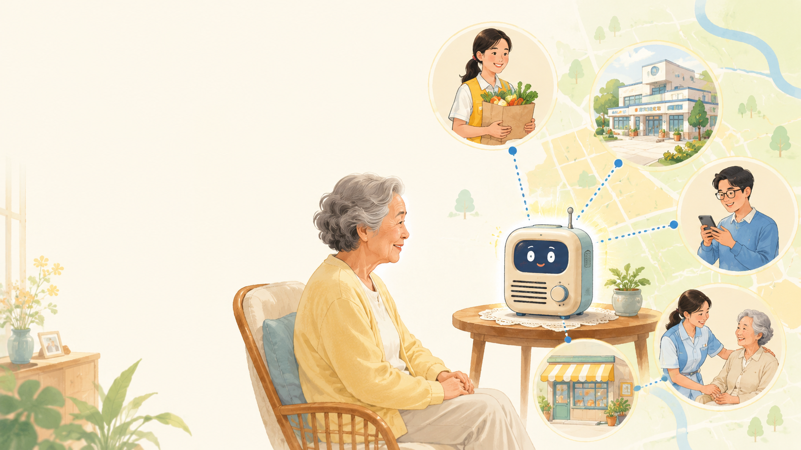
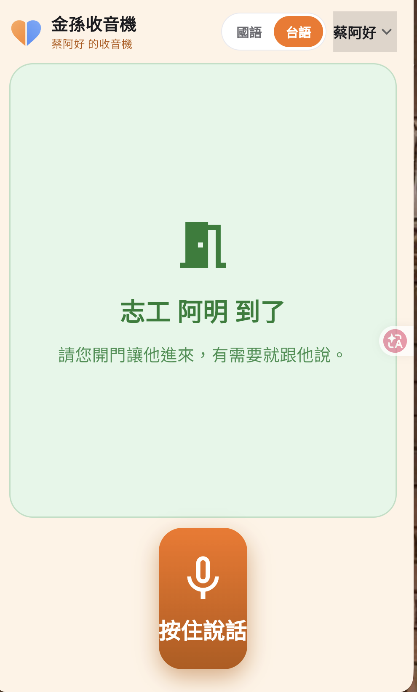
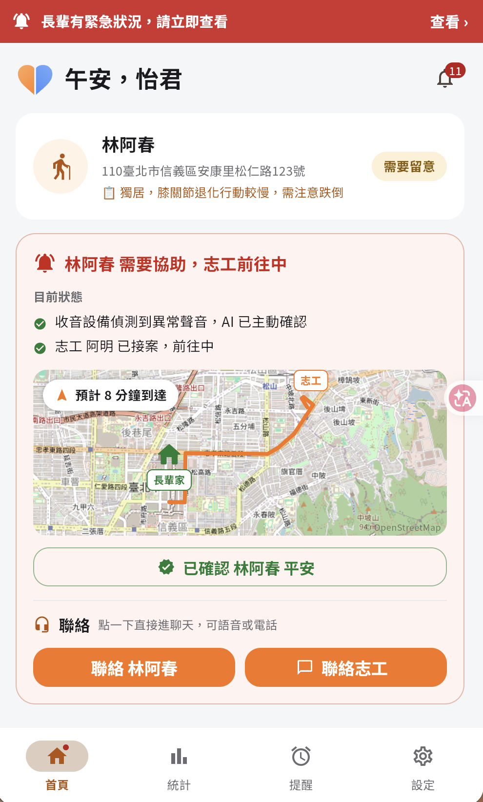
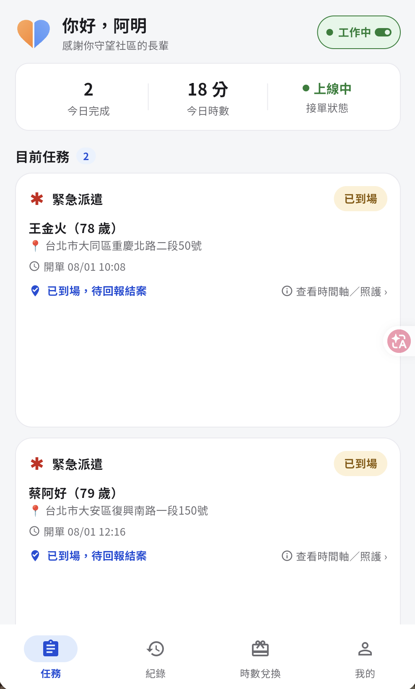
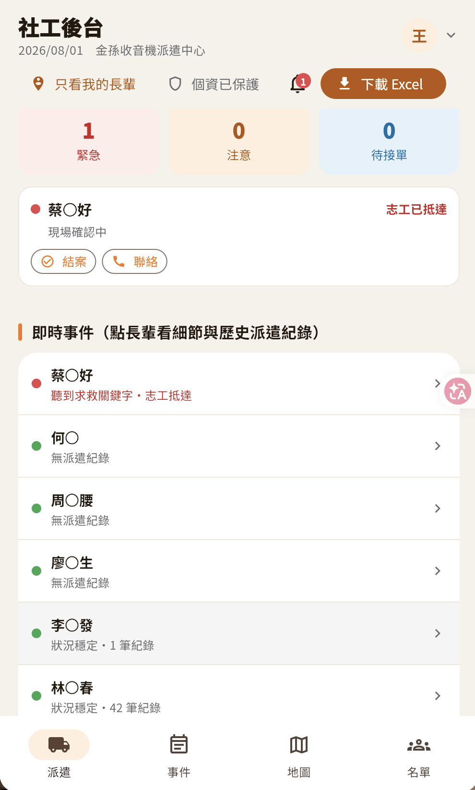
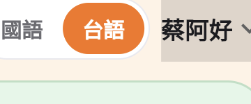
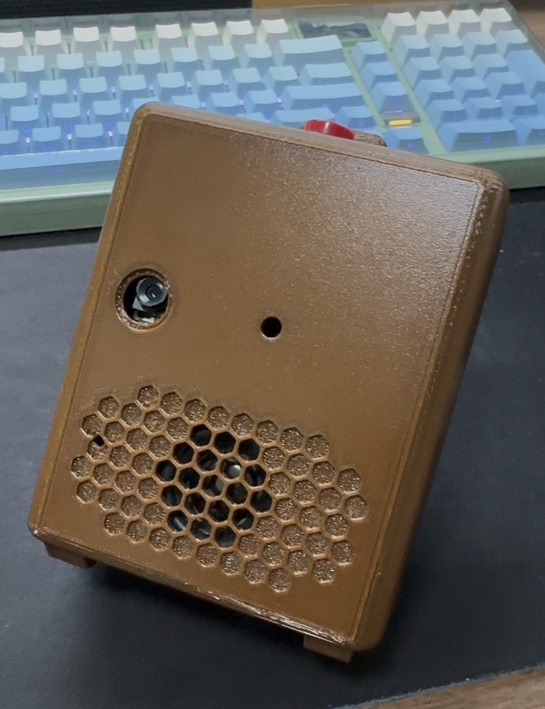
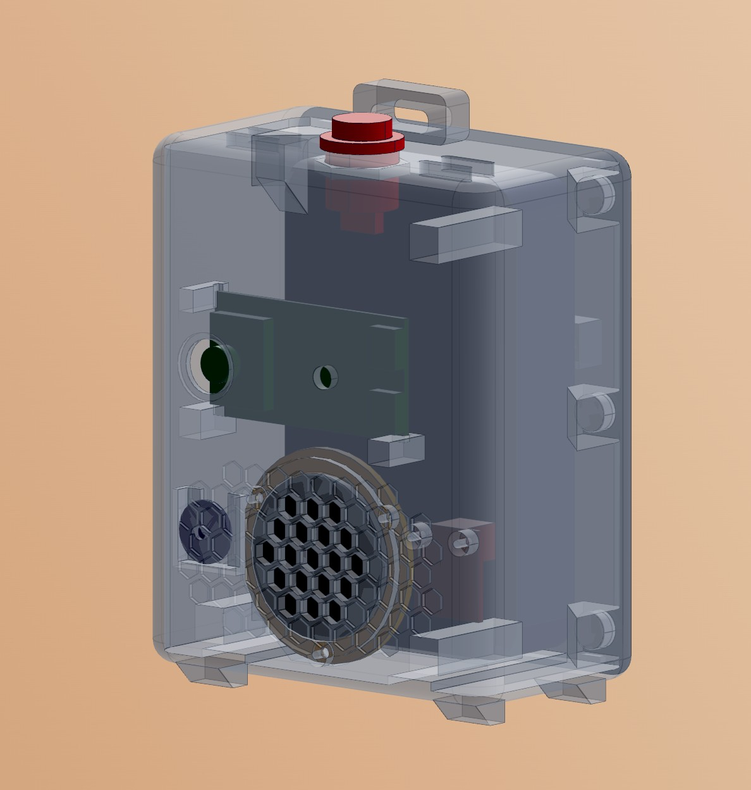

台灣十年提案 · 智慧照護與居家健康
時間銀行＋國台語都能通的金孫收音機——讓長輩的需求只要講一句話，就能像 Uber 點餐一樣被接住。
▶ Live Demo 影片・連結待補問題 · 規模

四端關係圖：收音機把一個事件同步推到四端，並補進第四端——社區志工，把「感知」接到真正能到場的人力。



產品設計 · 長輩端
對長者辨識度最高，遠遠就看得到。
高對比、超大字，不怕點錯。

聽得懂也說得出，長輩不用學。
家屬 App 藍牙一鍵佈建；無網路可選 4G。
整掌按大鈕或直接語音，手抖也免精細操作。
使用者端硬體說明 · 加分項


咖啡色圓角機身，快速打樣、依長輩手感微調；像收音機、不像醫療器材。
機身頂部掛繩孔，掛脖子或掛牆邊，走到哪帶到哪，求助不受限在固定位置。
頂部一顆大鍵，按住就說話、放開就送出；免螢幕、免 App、零學習。
麥克風收音、喇叭播報，國語台語都通；語音轉成文字後音檔即刪、絕不儲存。
相機＋NPU＋Wi-Fi/BLE 八合一；跌倒視覺推論在晶片本地完成、原始影像永不出門。
生成式 AI 技術應用
六個 Agent：Intent／Emergency／Needs／Conversation／Device／Memory，結構化工具呼叫，而非單次 prompt。
Bedrock Titan Embeddings ＋ Knowledge Bases——「牛奶跟雞蛋」對到他常去的店、病史與家人。
Transcribe 台語／國語辨識、Polly 語音播報；SOS／關鍵字在裝置端不必上雲。
低信心就語音再確認（「你是說要買牛奶嗎？」），寧可問一句、不亂派一單。
AWS 雲端技術架構
商業模型 · 客群
約 11 萬人；手無法精細操作——整個手掌就能按大鈕，打開、按下、說話。
約 9 萬人；家屬／志工用 App 掌握四端。
成本預算 · 全配套
| 硬體（量產 BOM：晟邦模組＋機構＋電池） | 700 |
| 佈建／安裝人力（一次） | 200 |
| 雲端服務・OTA（首年／台） | 250 |
| 維護・客服（首年／台） | 250 |
| 單套配套合計 | ≈ 1,400 |
依規模單套 1,000–2,000；硬體靠量產壓低、人力與維護隨規模攤薄。硬體由政府長照標案採購、差額補助，公司不靠硬體賺錢，獲利走服務訂閱＋標案。
願景
十年內，把「一個人在家」變成「附近有人能接手」。感知 → 決策 → 行動 → 回報，一條會呼吸的社區互助閉環。